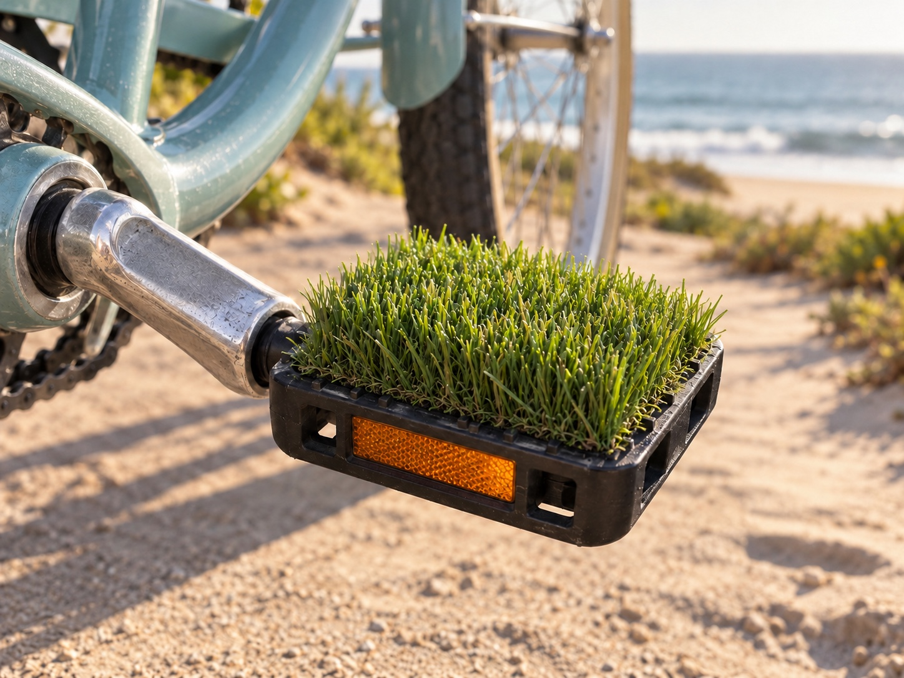
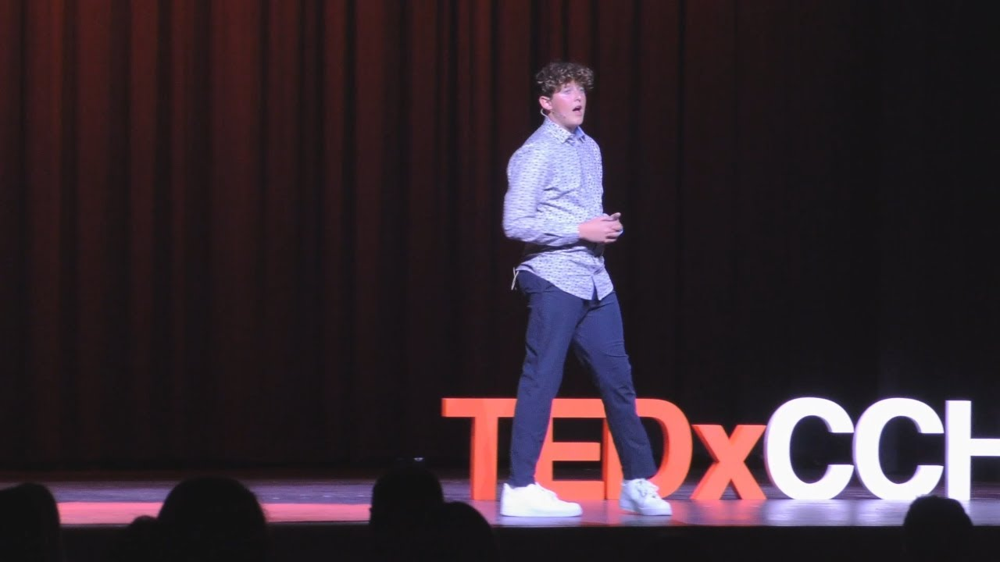

Meet the founder
Pierce
Millar.
Student entrepreneur.
Founder of Dons Business Institute.
The story behind DBI
It started with
a pair of bike pedals.
Long before Dons Business Institute, Pierce was finding small problems and trying to build something useful around them. That instinct took him from a fourth-grade business to the TEDx stage—and eventually to creating a place where other Cathedral students could learn by doing.
The first business
Grassy Pedals
A simple solution for barefoot bike rides.

In fourth grade, Pierce started Grassy Pedals: artificial-turf covers that made bike pedals more comfortable for barefoot rides to the beach.
He sold them on Etsy, turning an everyday frustration into a product someone else could use. The business ended when COVID began, but the habit of experimenting stayed.
Other ideas followed, including selling 3D-printed fidget cubes and building Students for Hire, an app connecting students with local work. Each project brought a different part of business into focus: making a product, reaching customers, and figuring things out as he went.
Finding his voice
From an idea
to the stage.
TEDxCCHS Youth · March 21, 2024

As a freshman at Cathedral Catholic, Pierce brought those early experiences to the TEDx stage.
His talk, “Three pillars of success from a teen entrepreneur,” explored what his ventures had taught him about taking chances, marketing, and delegation.
He stayed involved beyond his own talk, moving into speaker coaching and event leadership. Helping other students develop their ideas and find their confidence became another part of his work at Cathedral.
Watch Pierce’s TEDx talkDecember 2024 · Sophomore year
Building the opportunity
for others.
Pierce began building Dons Business Institute in December of his sophomore year.
The idea was to give Cathedral students access to the kind of practical business experience he had sought through his own projects. He brought together school leadership, industry professionals, and mentors, then worked on the curriculum, admissions process, fundraising, and day-to-day organization.
The first Flagship cohort began in fall 2025. After school, students would learn directly from professionals working in the field, apply those lessons to a real-company Case Competition, and earn the opportunity to develop ventures of their own.
Explore the Flagship ProgramThe work continues
Built to outlast
one student.
Today, Pierce works with a student leadership team and adult advisors to carry DBI forward. The next chapter is about giving future Dons the mentorship, responsibility, and room to build that helped shape his own journey.
Support the next generation